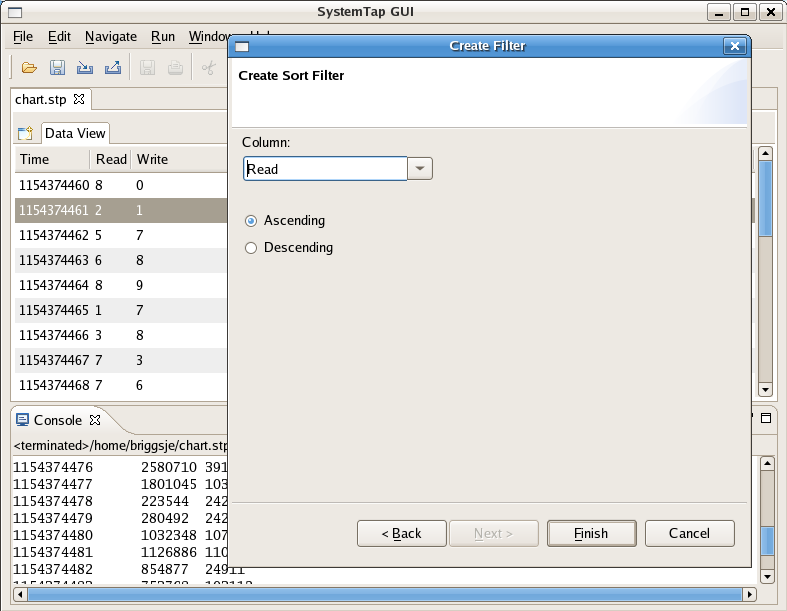
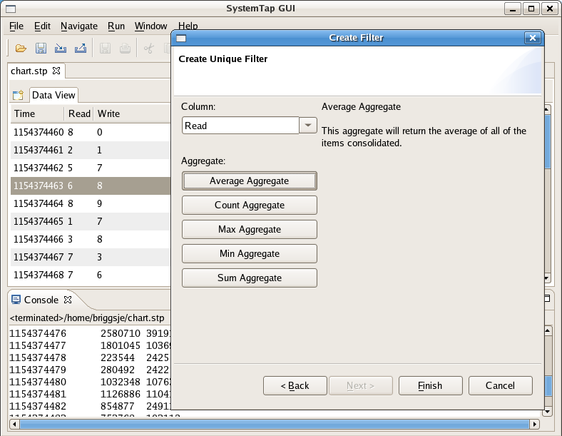

Table of Contents > Concepts
Filters
Filters are screens that you can set on your DataTable to limit the quantity of samples you wish to work with.
Filters are very often used in restricting the sheer amount of information available to make data tables and
graphs more substantial to people.
The following options exist to work with Filters in the DataTable:
- Add Filter... - Adds a Filter to the DataTable.
- Remove Filter... - Removes a Filter from the DataTable.
When you select Add Filter you see the following dialogue box:

What follows is a breakdown of each Filter type:
- Match Filter - This filter removes everything from the data set where the selected column's
value does not match the chosen value.

Result:

- Range Filter - This filter removes everything from the data set that is not included in the
selected range of values.

Result:

- Sort Filter - This filter will sort the data set based on the selected column. No data will be
removed.

Result:

- Unique Filter - This filter will remove all merge all entries in that data set that share a common
value in the selected column. Data for the removed rows will be aggregated together based on the chosen
aggregation method.

- Average Aggregate - This aggregate will return the average of all the items consolidated.
- Count Aggregate - This aggregate will return the number of items consolidated.
- Max Aggregate - This aggregate will return the maximum value of all the items consolidated.
- Min Aggregate - This aggregate will return the minimum value of all the items consolidated.
- Sum Aggregate - This aggregate will return the sum of all the items consolidated.